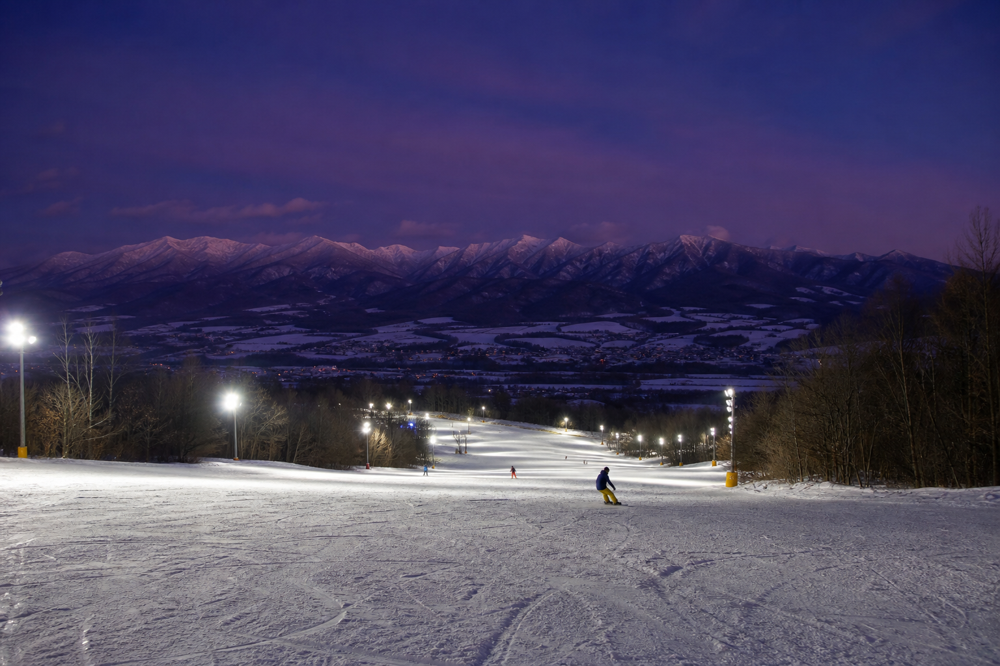
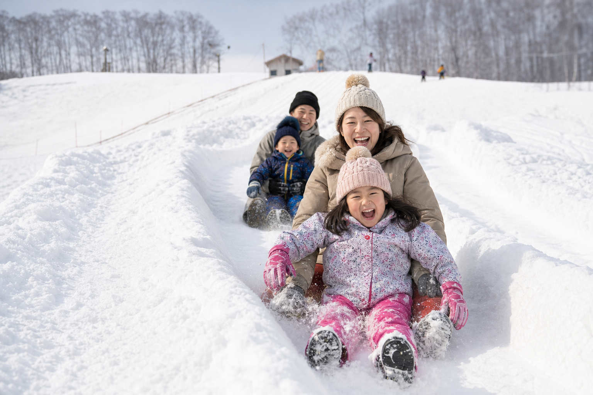

待ち時間ゼロ × 十勝岳ビュー
リフト1本・初級100%・標高差50m——恐怖心を与えない「雪の箱庭」。富良野スキー場の混雑や長時間待ちを避け、十勝岳連峰を背景に静かに雪遊びを楽しむ隠れた名所（Hidden Gem）。
コース・ビューを見る北海道上富良野町 · 日の出公園
JR上富良野駅から徒歩圏——待ち時間ゼロの、はじめての雪遊び。
大人日券 ¥1,000 Snow & Spa Pass ナイター〜20:30更新 12/25 9:00
リフト
運行中
リフト1基 · 待ち時間ほぼなし
コース
初級100%
標高差50m · 2コース
ナイター
20:30まで
9:00〜 · ナイター16:00〜
ビュー
十勝岳連峰
晴天時は大パノラマ
日の出の魅力
リフト1本・初級100%・標高差50m——恐怖心を与えない「雪の箱庭」。富良野スキー場の混雑や長時間待ちを避け、十勝岳連峰を背景に静かに雪遊びを楽しむ隠れた名所（Hidden Gem）。
コース・ビューを見る吹けば飛ぶような軽い雪質と、口コミで評価される雪の滑り台——スポーツ的な滑走より「雪景色と安全な雪遊び」を求める初めての雪体験層に最適。
ファミリーゾーン案内Visitor Pass
町民向けの大人日券¥1,000は維持しつつ、海外旅行者向けにレンタル連携・1日リフト券・フラヌイ温泉入浴をセットにした高付加価値パスを新設する提言（LP案）。客単価を5〜7倍に引き上げ、売上倍増の即効レバー。
Local
大人日券 ¥1,000
Pass
Snow & Spa Pass ¥5,000〜


Hands-free Package
施設内レンタルは現状なし——富良野エリアの民間レンタル事業者と連携し、事前オンライン決済でウェア・板をロッジ内またはロッカー受け取りにする「手ぶらパッケージ」提言（LP案）。
在庫リスクを施設が抱えず、海外からのお客様の受入を実現する外部連携モデル。
手ぶら案内Night Skiing
9:00〜20:30の通し営業（ナイター16:00〜）——夕方到着の旅行者も幻想的な雪景色を楽しめる。滑走後は徒歩圏の市街地へ誘導し、ナイトタイムエコノミーを創出。
公式情報はかみふらの十勝岳観光協会・かみふらいふポータルでも確認できます。
ナイター・営業時間

First Snow
初級者向け100%・標高差50m——東南アジアや台湾からの「初雪体験」層にとって、急斜面の恐怖なく雪景色と記念写真、そりや軽い滑走を楽しめる安全なプレイグラウンド。
Snow & Spa
日の出公園すぐそばの「フロンティア フラヌイ温泉」——炭酸美肌の湯と地元食材の食事。スキー後の疲労回復をセットにした日帰りモデルは、交通に制約のあるFIT層への最強のキラーコンテンツ。
町営バスで十勝岳温泉郷（カミホロ荘・凌雲閣など）への周遊も可能。
温泉ルートを見る
Night Ski & Dine
17:00〜19:00のナイター帯で幻想的な雪景色を楽しみ、徒歩圏の居酒屋や「ぶたさがり」提供店へ——チケット半券でワンドリンク特典など、地域経済への波及を狙うNight Ski & Dineキャンペーン（LP案）。
NIGHT SKI · LOCAL DINE01
JR上富良野駅
富良野線 · 旭川・富良野方面からアクセス
02
徒歩約15分
雪道を歩いて日の出公園スキー場へ
03
ナイター滑走
16:00〜のナイター帯 · 待ち時間ほぼなし
04
フラヌイ温泉
徒歩圏の源泉100%温泉でリカバリー
05
市街地で夕食
ぶたさがりなど上富良野のローカルグルメへ
特集
Access
JR上富良野駅から徒歩約13〜15分 · 駐車場60台（無料）
指定管理者：株式会社上富良野振興公社 · 公式情報は観光協会サイト参照